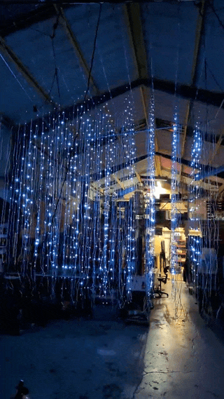
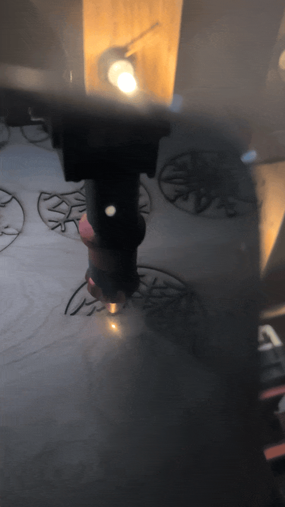

Wake'n'Make is a private makerspace founded in 2023 to cultivate a community of makers interested in installation artwork, music, multimedia production, and experience design. We provide a space for artists to create, collaborate, and exhibit their work. Our shop is equipped with a variety of digital fabrication tools, including a CNC router, CNC mill, 3D printers, laser cutter, and more. We also have traditional woodworking, metalworking, and electronics tools. Our shop is located in the Bayview neighborhood of San Francisco, California.
Wake'n'Make offers contract services to help you bring your ideas to life. Our team of experienced makers, artists, and designers can help you with a variety of projects, including digital design and fabrication, custom installations, and multimedia production. We have a range of tools and equipment available to help you realize your vision, including a CNC router, CNC mill, 3D printers, laser cutter, and more. Our team can work with you to develop a plan, create prototypes, and produce final products. We can also help you with installation, setup, and maintenance of your work. Contact us to discuss your project and get a quote.
We offer memberships to artists, makers, and creatives who are interested in using our space and tools. Memberships are available on a monthly or daily basis. We also offer workshops, classes, and events to help our members develop their skills and connect with other artists. Our goal is to provide a supportive and inspiring environment for artists to explore new ideas and create innovative work.